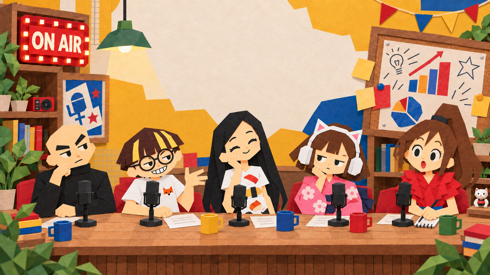
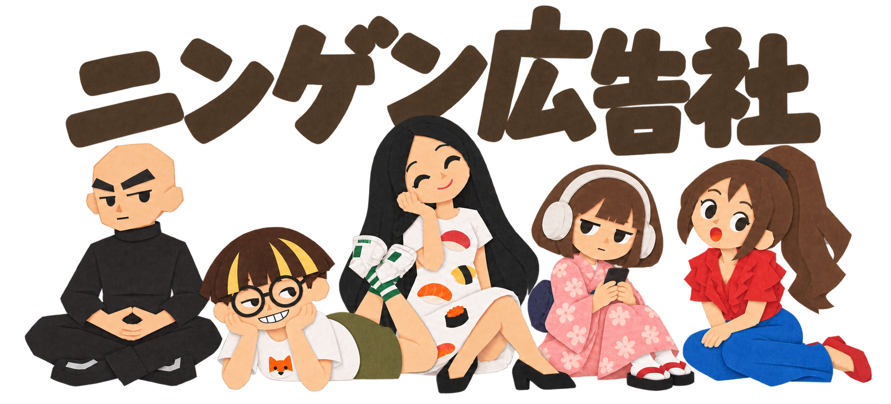
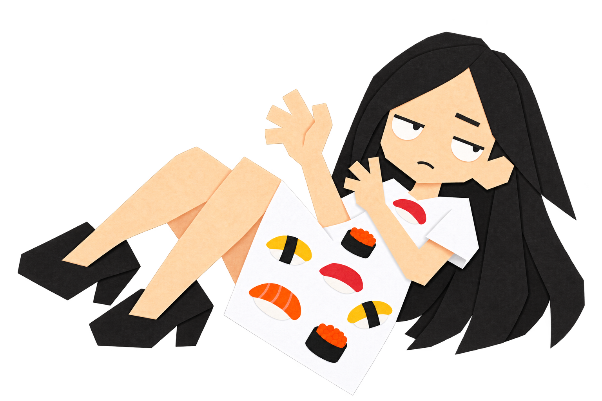
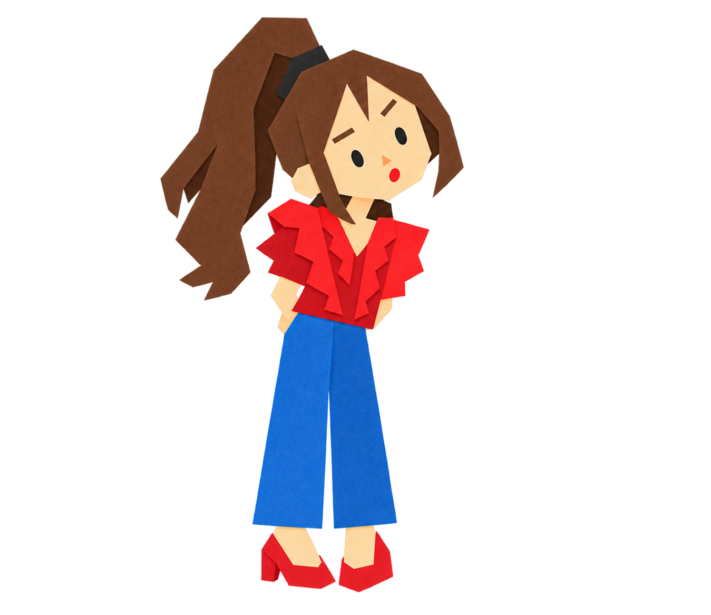

月
朝 6:30


日常のモヤモヤも、広告の疑問も、社会の空気も。
人文知の力で、使えるインサイトに解釈し直す番組です。
この番組について
ニンゲン広告社は、教養としてのマーケティングの講義とディベートを届けるPodcastです。 きれいな正解よりも、社員それぞれの個性と現場感をぶつけながら、問いの奥にいる「ニンゲンの本質」を明らかにします。
事業会社のマーケッター、広告会社のプランナー、広告業界を志す学生のみなさまへ。 ゲストの知見も交え、人間の可笑しみを仕事で使える視点へ翻訳してお届けします。

弊社は多様性が原動力！
配信スケジュール
月
朝 6:30
水
朝 6:30
金
不定期
社員紹介
お気に入りの社員をクリック！
いますぐ聴く
最新エピソード
テレビやネットに押され幾度も衰退を囁かれたラジオが、なぜ荒波をサヴァイブし、そして今や逆襲を果たしているのか？ その鍵は「電波を売る」から「声で人と繋がる」への事業定義の転換にありました。視覚情報がないからこそ湧く想像力や1対1の親密さ、…
エピソードを開く代理店と事業会社では、マーケターが大興奮する瞬間はどう違うのか！？ 「仕事の喜び」を感じる時は？相手はどう違うのか。伝達ミスで無意味な1時間のプレゼンをした失敗、若手を登壇させにくい育成のジレンマ、PR施策が思わぬ形でバズった体験をたどり…
エピソードを開く帰ってきたぜ！広告トリビアのクイズ大会！ 今回はセレンディピティだ！ ポストイットやSlackの共通点とは？実はどれも「開発の失敗」や「意外な誤用」から生まれた大ヒット商品です。今回のクイズでは、作り手の意図と受け手の解釈のズレが引き起こ…
エピソードを開く放送の外でも
コミュニケーションディレクター、マーケティングプランナー、シナリオライターとしての視点を、文章でも。
Web限定
ポッドキャストには並ばない、ちょっと変なコンテンツを置いています。


おたより
取り上げてほしいテーマ、広告・マーケティングのお悩み、番組への感想をお送りください。